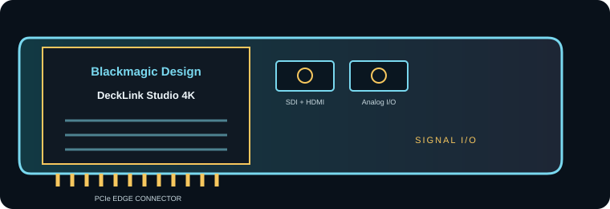

[ INDIVIDUAL COMPONENT // EXPANSION CARDS ]
Blackmagic Design DeckLink Studio 4K
Multi-format PCIe capture/playback card combining 6G-SDI, HDMI and legacy analog video/audio I/O. This is a model-specific reference; verify the board revision and full specifications against the official sources before installation.

IDENTIFICATION: Match the silkscreen/model marking, part number, board revision and bracket to manufacturer documentation. Port direction, supported formats and driver behavior can vary by model revision and software release.
Capture, playback and compatibility specifications
| Exact model | DeckLink Studio 4K |
|---|---|
| Bus / host interface | PCI Express 2.0 four-lane (x4) interface, compatible with x4, x8 and x16 PCIe slots; verify chassis clearance and current Desktop Video requirements. |
| Capture / playback interface | One SDI input and one SDI output (10-bit SD/HD/2K/4K; 6G 4:2:2 or 3G 4:4:4), HDMI 1.4b I/O, analog component video in/out, composite and S-Video, four-channel balanced analog audio in/out, AES/EBU audio, reference and RS-422 deck control. |
| Resolution and frame-rate envelope | SD/HD/2K/4K formats; SDI supports 6G 4:2:2 and 3G 4:4:4, with supported frame rates depending on connector and mode. Analog component is SD/HD only; use the official format table for exact timing and 2160p limits. |
| Pixel format and codec handling | Blackmagic lists AVC-Intra, AVCHD, DNxHR/DNxHD, Apple ProRes family and uncompressed 8/10-bit 4:2:2 (plus supported 10-bit 4:4:4) among supported codecs/formats. Codec processing is provided by Desktop Video/host software, not an onboard compressed-video encoder. |
| Host compatibility | Requires a supported PCIe slot, correctly wired breakout, Blackmagic Desktop Video and compatible software/OS. Legacy analog formats may need correct levels, cabling and regional video standards. |
| Limitations and installation checks | Analog I/O requires the right breakout and has different quality/format limits from SDI/HDMI. 6G-SDI is not 12G; 4K frame-rate support is lower than HD in several paths. Check exact connector direction and cable pinout before patching. |
Integration notes and limitations
- Measure available PCIe lanes and sustained host/storage bandwidth; mechanical slot length alone does not guarantee the electrical link width needed by the card.
- Confirm that source timing, signal standard, cable, reference, pixel format, channel mapping and software configuration agree before recording or playback.
- Record driver/firmware versions, operating system, application, breakout/accessory part numbers and tested mode. Update only with a recovery plan for mission-critical rigs.
- Analog I/O requires the right breakout and has different quality/format limits from SDI/HDMI. 6G-SDI is not 12G; 4K frame-rate support is lower than HD in several paths. Check exact connector direction and cable pinout before patching.
For codec planning, distinguish a video transport/interface and raw pixel format from a compressed media-file codec. A supported capture application may encode a file format that the card itself does not encode.
Manufacturer sources and support
- Blackmagic Design — DeckLink Studio 4K manufacturer technical/product informationProduct-line technical reference; consult the exact model format and interface table for the required mode.
- Blackmagic Design — Blackmagic Desktop Video downloads and release notesOfficial support, driver or release-note resource; operating-system and software compatibility can change by release.
Manufacturer documentation for the precise hardware revision takes precedence over generic workflow or family-level guidance.